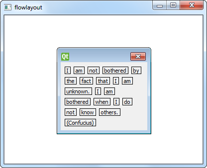

Graphics View Flow Layout Example
Demonstrates flow layout on a graphics view scene.
The Graphics View Flow Layout example shows the use of a flow layout in a Graphics View widget.

This example uses a Graphics View to display the widget, which is a more customizable approach than displaying the flow layout in the application window (See Flow Layout Example).
Graphics View Flow Layout snippet:
#include "window.h" #include <QApplication> #include <QGraphicsView> int main(int argc, char *argv[]) { QApplication app(argc, argv); QGraphicsScene scene; QGraphicsView *view = new QGraphicsView(&scene); Window *w = new Window; scene.addItem(w); view->resize(400, 300); view->show(); return app.exec(); }
Flow Layout Example snippet:
#include <QApplication> #include "window.h" int main(int argc, char *argv[]) { QApplication app(argc, argv); Window window; window.show(); return app.exec(); }